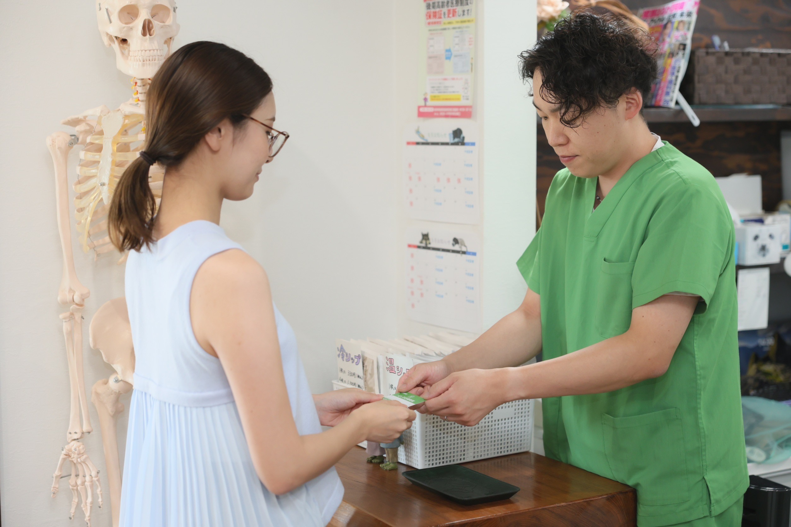
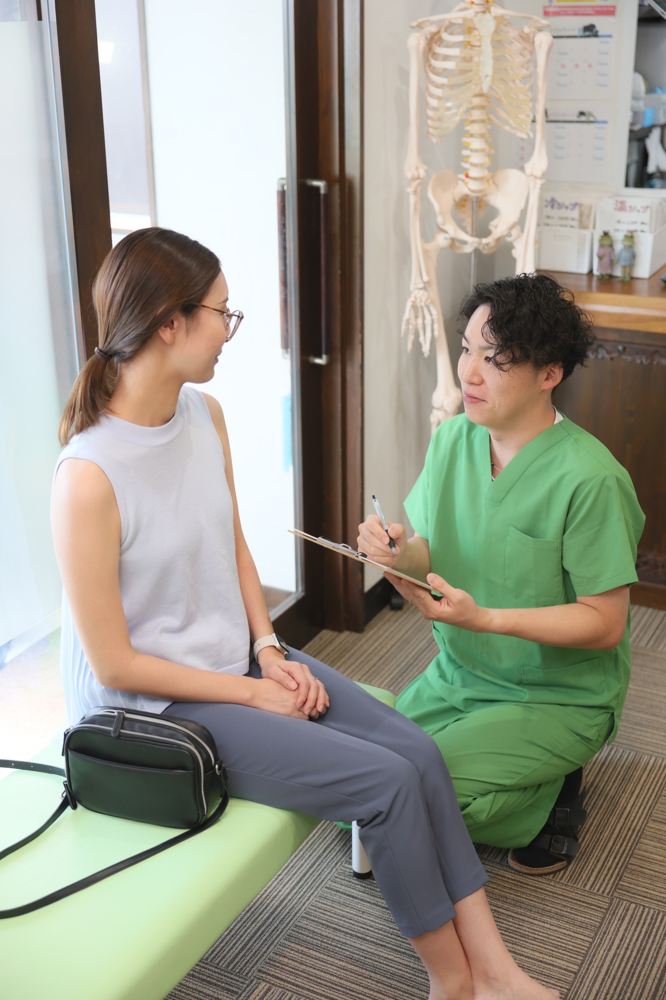

SUBJECT
施術のご案内
こんなお悩みの方に!
四十肩・五十肩
慢性的な肩凝り
交通事故でのむち打ち
急性腰痛
慢性腰痛
足関節捻挫
脱臼
スポーツによるケガや痛み
膝や関節の痛み
産後の骨盤矯正
施術内容
いっしょに健康な体づくりを始めましょう!
施術の流れ
ご来院・受付

ご来院いただきましたら、まず受付でお名前をお伝えください。
どのような症状でご来院されたかなどをお伺いすることで、最適な治療をご案内いたします。
問診
問診では、現在のお体の状態やお悩みの症状をお伺いします。患者さま一人ひとりの症状に合わせた最適な治療計画を立てるために、痛みの場所や強さ、発症の経緯などを具体的に教えてください。安心してリラックスしながらお話しください。
施術
当院では、清潔でリラックスできる空間をご提供しています。最新の設備を備え、患者様一人一人に合わせた施術を行います。
院長紹介
西脇 佑真
資格
柔道整復師 / 機能訓練指導員 / 外部講師
トレーナー経歴
大垣南高等学校 硬式野球部
各務原高等学校 バスケットボール部
大垣商業高等学校 陸上競技部